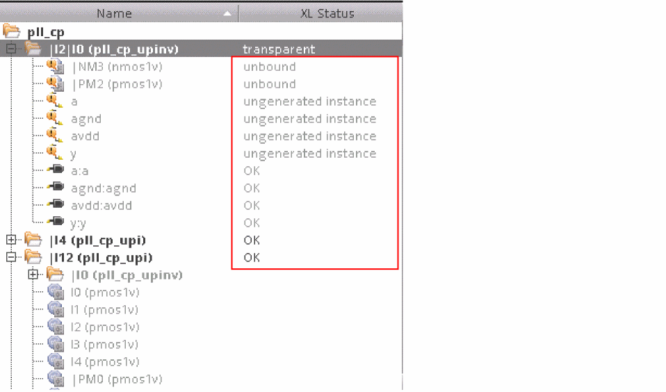

Creating a Transparent Instance
To create a transparent instance, which is an instance that has its hierarchy set as transparent:
-
In the Navigator assistant or canvas, right-click the instance to be set as transparent and choose the Hierarchy – Set Transparent command.
- The Set Transparent command is context-sensitive. Only those instances that support the command show it as enabled in the shortcut menu.
-
The Set Transparent command is not supported for mosaic instances.
transparent, as displayed in the figure below. This implies that the instances within the transparent instance can now be recognized by the binder. The instances and nets within the transparent instance are not grayed out like before, which indicates that these are now visible to the binder. In addition, the XL status of the instances and nets within the transparent instance is now reflected.

Contrary to the Set Transparent command, if an existing transparent instance needs to be marked as non transparent, use the Unset Transparent command.
Related Topics
Return to top